Story7
The base game's missions.
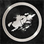
If It Bleeds, We Can Kill It.
Complete the Main Mission "A Wrench in the Works".
Main mission in Mountains
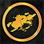
Go-Getter
Complete 25 Side Missions.
Alpine Unrest9
Missions, secrets and collectibles of the Alpine Unrest expansion on Himfjäll.
We're Fully Booked
Complete the mission "For the Sick and the Injured".
Main mission in Himfjäll (Alpine Unrest)
Outside in the Distance
Complete the mission "Nothing but the Snow".
Main mission in Himfjäll (Alpine Unrest)
Protector of the Resistance
Complete the mission "The Resistance".
Main mission in Himfjäll (Alpine Unrest)
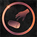
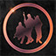
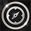
Unorthodox Skiing
Get from start to finish on the ski slope in under 40 seconds.
FNIX Rising9
Missions and collectibles of the FNIX Rising expansion.
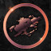
He's Out ThereSecret
Free the survivor in the destroyed villa during the mission "The Ringfort".
Main mission in Archipelago
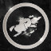
Wheels of FortuneSecret
Complete the side mission "In the Face of Adversity".
Side mission in Farmlands
We are the ResistanceSecret
Complete the side mission "We Are the Resistance".
Side mission in South Coast
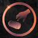
The Ones That Came Before Us
Find all 20 "Survivor's Notes" and "Love Letters" Collectibles.
Machines14
Destroying machines: counts per type, classes and special kills.
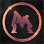
First Blood
Destroy your first machine.
Decimation
Destroy 500 machines.
You're A Disease And I'm The Cure
Destroy 20 Ticks.
Hasta La Vista Baby
Destroy 30 Seekers.
All Out Of Bubblegum
Destroy 80 Runners.
Go Ahead, Make My Day
Destroy 30 Hunters.
Yippee-Ki-Yay
Destroy 15 Harvesters.
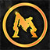
Say Hello To My Little Friend
Destroy 15 Tanks.
Offence Is The Best Defence
Destroy 3 machines without taking damage.
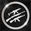
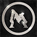
Adapt and Evolve
Destroy one of each Apocalypse Class machine: Tick, Runner, Hunter and Tank.
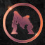
From a Distance
Use a hunting or sniper rifle to destroy 15 Seekers.
Weapons & combat15
Kills with each kind of weapon, lures, stealth and weapon mods.
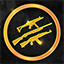
Marksman
Destroy an enemy with a shot fired from 300 meters away.
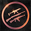
Splash Damage
Destroy more than one machine at the same time using the m/49 Granatgevär or a hand grenade.
Gunslinger
Use handgun to destroy 20 machines.
Operator
Use shotguns to destroy 40 machines.
Gangster
Use submachine guns to destroy 60 machines.
Commando
Use assault rifles to destroy 80 machines.
Hunter
Use hunting rifles to destroy 20 machines.
Sapper
Use explosives to destroy 15 machines.
Real Sneaky Like
Use suppressed weapons to destroy 20 enemies.
Modder
Attach a mod to a weapon.
Lock & Load
Fully equip a level 5 weapon with level 5 mods.
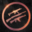
Running Wild
Use a melee weapon to blow up 20 cars.
Exploration7
Travelling Östertörn: safehouses, locations, bunkers, lighthouses and the homes.
Gustafsloppet
Travel 90 km on foot.
I Just Called To Say I Love You
Listen to the messages left on 5 different answering machines.
Folk Wisdom
Read 10 different sayings in homes.
Explorer
Discover 50 locations.
Collectibles & loot8
Collecting things and looting the world.
Scavenger
Find and take 80 items from the world.
Tourist
Collect all souvenirs.
Fashionista
Collect 200 items of apparel.
Spare Parts
Scavenge a vision module from a machine.
I Want To Be A Mighty Pirate!
Loot something while wearing an eyepatch.
Characters & co-op3
Your characters and playing with others.
Player Two
Create a second character.
Postgraduate
Have two separate characters with different active specializations.
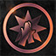
Assist
Deal more than 50% of the damage to an enemy killed by another player.
Source
The achievement list (names, descriptions, icons and which ones are secret) is read from Steam's own copy of the game's achievement list, the one the Steam client keeps for Generation Zero, and the icons are the files it names on Steam's image server. The game files only hold the logic that unlocks them. The global unlock percentages from Steam aren't included.